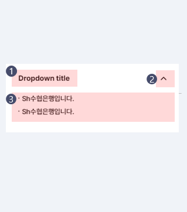

- Foundation
- Button
- Bottom Sheet
- Dropdown
- List
- Search
- Selection Controls
- Tab
- Text Field
Dropdown
- Definition
- Dropdown은 옵션리스트를 보여주어, 한정된 공간을 효율적으로 쓸 수 있도록 한다.
- 1한 화면에서 여러 개의 Dropdown을 제공할 수 있다.
- 2사용자가 쉽게 열고 닫을 수 있는 형태로 제공해야 한다.
- 3하나의 Dropdown 메뉴는 두개 이상의 옵션 항목으로 구성되어야 한다.
- 4Dropdown에서 제공하는 모든 옵션을 사용자가 쉽게 확인하고 선택할 수 있어야 한다.
- 5옵션 리스트는 하나의 큰 카테고리로 묶일 수 있도록 서로 관련있는 항목으로 구성해야 한다.
- Anatomy
-

- 1Dropdown Title
Dropdown에서 제공될 옵션 항목에 대한 정보를 제공한다.
한 단어 또는 한줄을 넘기지 않는 간략한 표현으로 작성한다. - 2Arrow Icon
우측에 Arrow Icon을 반드시 표시하여 List가 열리거나 닫힐수 있다는 힌트를 제공해야한다.
- 3List Area
Dropdown 내용이 들어가는 영역으로 텍스트와 이미지가 포함된 리스트를 제공할 수 있다.
- 1Dropdown Title